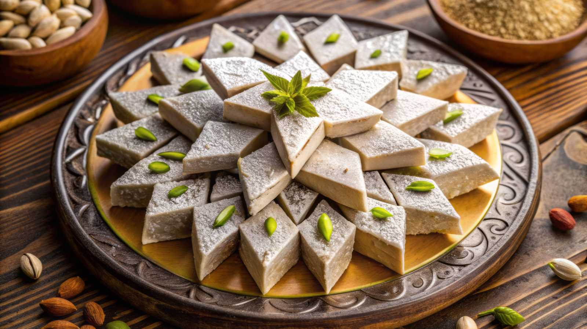

Kuch Mitha Ho Jaye
Gajar Halwa
Carrot halwa is a popular sweet made in North India, and it is especially popular during winters. The traditional gajar ka halwa recipe is made with only carrots, whole (full-fat) milk, ghee and sugar; there’s no need for khoya (evaporated milk solids) or condensed milk.
Kaju Katli
Kaju Katli is a traditional cashew fudge, and is one of the most sought after and loved Indian sweets. Whenever we get a big box at home they disappear in a matter of days.
Rasmalai

Also spelled ras malai, rasa malei, or rossomalai, this delicious dish is beloved all over the Indian subcontinent. Rasmalai is known to have its origin in Bengal. It is a favorite dessert amongst many Indians, known for its rich and indulgent flavors.